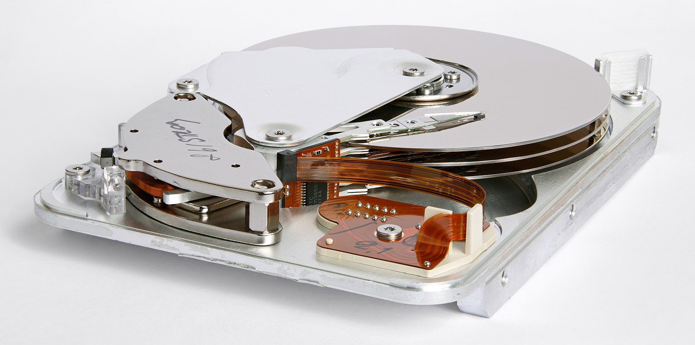

The disk القرص
Seven pages have treated the file as the unit. This page goes underneath it: the sectors a file actually occupies, the space it is given and does not use, and how a disk is divided before any file exists. عاملت سبع صفحات الملف بوصفه الوحدة. و هذه الصفحة تنزل تحته: إلى الـ sectors التي يشغلها الملف فعلاً، و المساحة التي تُمنح له و لا يستخدمها، و كيف يُقسَّم القرص قبل وجود أي ملف.
| Topic | Minutes | Hands-on |
|---|---|---|
| T12 Storage Internals & Slackبنية التخزين و الـ slack | 45 | Yes |
| T13 Partitioning — MBR & GPTالتقسيم — MBR و GPT | 68 | Yes |
Every number on this page is measured from EVS-07, four disk images built by scripts/make_evs07.py in this repository and hash-verified. Offsets, cluster sizes, slack bytes and the recovered partition table all came from reading the images.
كل رقم على هذه الصفحة مقيس من EVS-07، و هي أربع صور أقراص بناها scripts/make_evs07.py في هذا المستودع و جرى التحقق من قيم الـ hash الخاصة بها. فالإزاحات و أحجام الـ clusters و bytes الـ slack و جدول الـ partitions المستعاد كلها من قراءة الصور.
Where we are أين نحن الآن
`P05` insisted on a physical image and said the cost of a logical one was permanent. This is the page that makes that concrete: slack, unallocated space and the partition table are all outside every file, and a logical acquisition captures none of them. أصرّ `P05` على صورة physical و قال إن ثمن الصورة الـ logical دائم. و هذه هي الصفحة التي تجعل ذلك ملموسًا: فالـ slack و المساحة غير المخصّصة و جدول الـ partitions كلها خارج كل ملف، و الـ acquisition الـ logical لا يلتقط أيًّا منها.
- a file is given whole clusters, so almost every file is followed by space it does not use. يُمنح الملف clusters كاملة، فيتبع كل ملف تقريبًا مساحة لا يستخدمها.
- that space is not erased — it still holds whatever was there before. و تلك المساحة لا تُمسح — فهي ما زالت تحمل ما كان فيها من قبل.
What you will be able to do ما الذي ستكون قادرًا عليه
- compute the slack of any file from its size and the cluster size, and say what may be in it. أن تحسب slack أي ملف من حجمه و حجم الـ cluster، و تحدّد ما قد يكون فيه.
- explain why TRIM on an SSD destroys evidence that a hard disk would have kept. أن تشرح لماذا يُتلف TRIM على الـ SSD دليلاً كان القرص الصلب سيحتفظ به.
- read a 64-byte MBR partition table field by field, and say what the type byte does not prove. أن تقرأ جدول partitions بحجم ٦٤ byte حقلاً حقلاً، و تحدّد ما لا يُثبته byte النوع.
- name the five structures of a GPT disk and explain why it survives what an MBR does not. أن تُسمّي البنى الخمس لقرص GPT، و تشرح لماذا ينجو مما لا ينجو منه الـ MBR.
- recover a wiped partition table and prove the recovery is byte-identical to the original. أن تستعيد جدول partitions ممحوًّا و تُثبت أن الاستعادة مطابقة للأصل byte بـ byte.
How a disk stores a fileكيف يخزّن القرص ملفًّا
Platters, NAND, sectors and clusters — and the gap between what a file is and what it is given.الأقراص الدوّارة و الـ NAND و الـ sectors و الـ clusters — و الفجوة بين ما هو الملف و ما يُمنح له.
Platters and NAND الأقراص الدوّارة و الـ NAND
Two storage technologies, and the difference between them changes what evidence survives. That is the only reason a forensics course teaches hardware at all. تقنيتا تخزين، و الفرق بينهما يغيّر أي دليل يبقى. و هذا هو السبب الوحيد لتدريس العتاد في كورس تحليل جنائي أصلاً.

| Hard disk | SSD | |
|---|---|---|
| writes byآلية الكتابة | magnetising a region of a spinning platterبمغنطة منطقة من قرص دوّار | charging a NAND cellبشحن خلية NAND |
| overwrite in placeالكتابة فوق المكان نفسه | yesنعم | no — the controller writes elsewhereلا — يكتب الـ controller في مكان آخر |
| where a deleted file goesأين يذهب الملف المحذوف | stays until something overwrites itيبقى حتى يُكتب فوقه شيء | may be erased by the drive itselfقد يمحوه القرص نفسه |
| the examiner controls thisهل يتحكم الفاحص في ذلك | yes, with a write blockerنعم، بـ write blocker | not entirelyليس تمامًا |
Because this is the page where the mechanism matters. A head magnetises a region — it never removes one — and that single physical fact is why deleted data persists, why slack holds history, and why the whole of `T15` is possible. لأن هذه هي الصفحة التي يهمّ فيها الميكانيزم. فالرأس يُمغنط منطقة — و لا يُزيلها أبدًا — و هذه الحقيقة الفيزيائية وحدها هي سبب بقاء البيانات المحذوفة، و سبب حمل الـ slack للتاريخ، و سبب إمكان `T15` كله.
What TRIM destroys ما الذي يُتلفه الـ TRIM
On an SSD the operating system tells the drive “these blocks are no longer in use”. The drive then erases them on its own schedule — with no operating system involved and no examiner able to stop it. على الـ SSD يخبر نظام التشغيل القرصَ بأن «هذه الكتل لم تعد مستخدمة». فيمحوها القرص بعد ذلك وفق جدوله هو — بلا تدخّل من نظام التشغيل، و دون أن يستطيع فاحص إيقافه.
A deleted file on a hard disk waits to be overwritten. A deleted file on a TRIM-enabled SSD may be gone within minutes, at the drive’s own initiative — and it can keep erasing while connected to a write blocker, because the erase is internal and the blocker only stops the host. الملف المحذوف على قرص صلب ينتظر أن يُكتب فوقه. أما الملف المحذوف على SSD مفعَّل عليه TRIM فقد يختفي خلال دقائق، بمبادرة من القرص نفسه — و قد يستمر المحو و القرص موصول بـ write blocker، لأن المحو داخلي و الـ blocker يوقف المضيف فقط.
#1 On an SSD, “the file was not recovered” is much weaker evidence of absence than on a hard disk. #2 Time to acquisition matters in a way it does not for a platter — and the media type belongs in your report, because it changes what every later negative result means. ١ على الـ SSD، تكون عبارة «لم يُستَرجَع الملف» دليل غياب أضعف بكثير منها على قرص صلب. ٢ و تصير سرعة عمل الـ acquisition مهمّة بشكل لا يهمّ في القرص الدوّار — و نوع الـ media يجب أن يُذكر في تقريرك، لأنه يغيّر معنى كل نتيجة سلبية بعد ذلك.
Wear levelling adds the same problem from the other side: the controller moves data around to spread writes, so a logical address does not correspond to a fixed physical cell, and copies of old content can persist in blocks the host can no longer address. و يضيف الـ wear levelling المشكلة نفسها من الجهة الأخرى: فالـ controller يُحرّك البيانات لتوزيع الكتابة، فلا يقابل العنوان المنطقي خليةً فيزيائية ثابتة، و قد تبقى نسخ من محتوى قديم في كتل لم يعد المضيف يستطيع مخاطبتها.
Sectors, clusters and slack الـ sectors و الـ clusters و الـ slack
A disk is addressed in sectors. A file system allocates in clusters. Those two numbers are different, and the entire subject of this half lives in the gap between them. يُعنوَن القرص بـsectors. و يخصّص نظام الملفات بـclusters. و الرقمان مختلفان، و موضوع هذا النصف كله يقع في الفجوة بينهما.
Five files, and what they cost خمسة ملفات، و ما تكلّفه
These are the five files on EVS-07, chosen so the arithmetic is exact. The cluster is 4,096 bytes throughout.
هذه هي الملفات الخمسة على EVS-07، مختارة ليكون الحساب دقيقًا. و الـ cluster ٤٬٠٩٦ byte في كل الحالات.
EXACT.BIN is 4,096 bytes and leaves zero slack. OVER.BIN is 4,097 — one byte more — and leaves 4,095. A single byte costs four thousand bytes of allocated space, and that space is where the previous occupant is still sitting.
ملف EXACT.BIN حجمه ٤٬٠٩٦ byte و يترك slack صفرًا. و ملف OVER.BIN حجمه ٤٬٠٩٧ — byte واحد زيادة — و يترك ٤٬٠٩٥. فـ byte واحد يكلّف أربعة آلاف byte من المساحة المخصَّصة، و تلك المساحة هي حيث ما زال الساكن السابق موجودًا.
How a disk is dividedكيف يُقسَّم القرص
Sixty-four bytes in the first sector decide the shape of the whole disk. Then the scheme that replaced them, and what happens when either one is gone.أربعة و ستون byte في أول sector تقرّر شكل القرص كله. ثم النظام الذي حلّ محلها، و ما يحدث حين يختفي أيٌّ منهما.
The master boot record سجل الإقلاع الرئيسي
The first 512 bytes of an MBR disk. Boot code, a disk signature, four sixteen-byte entries, and two bytes that say this is a boot record. أول ٥١٢ byte من قرص MBR. كود إقلاع، و disk signature، و أربعة مدخلات بحجم ١٦ byte، و اثنان من الـ bytes يقولان هذا سجل إقلاع.
It is a declaration, not a measurement. A partition marked 0x07 (NTFS) may hold FAT, ext4, an encrypted container or nothing at all; one marked 0x00 may still hold a live file system whose entry was simply edited. Read the volume boot sector, not the table, to know what is actually there.
إنه إعلان لا قياس. فالـ partition الموسوم 0x07 أي NTFS قد يحوي FAT أو ext4 أو container مشفَّرًا أو لا شيء إطلاقًا، و الموسوم 0x00 قد يحوي نظام ملفات حيًّا عُدِّل مدخله فقط. فاقرأ الـ boot sector الخاص بالـ volume، لا الجدول، لتعرف ما هو موجود فعلاً.
What four entries cost ما تكلّفه أربعة مدخلات
Four entries is the whole table. That limit is why extended partitions exist — and why an MBR disk can hide structure in a place a beginner never looks. أربعة مدخلات هي الجدول كله. و هذا الحدّ هو سبب وجود الـ extended partitions — و سبب قدرة قرص الـ MBR على إخفاء بنية في موضع لا ينظر إليه المبتدئ أبدًا.
| Type | What it is |
|---|---|
| primary | one of the four entries in the table at LBA 0. Maximum four.أحد المدخلات الأربعة في الجدول عند LBA 0. أربعة كحدٍّ أقصى. |
| extended | a primary entry (type 0x05 or 0x0F) containing a chain of further partition records, each in its own sector inside the extended area.مدخل primary (نوعه 0x05 أو 0x0F) يحوي سلسلة من سجلات partitions إضافية، كلٌّ منها في sector خاص به داخل المنطقة الـ extended. |
| logical | the partitions inside that chain. They are not in the table at LBA 0 at all.الـ partitions داخل تلك السلسلة. و هي ليست في الجدول عند LBA 0 إطلاقًا. |
Reading LBA 0 and stopping tells you about at most four regions. If one is an extended partition, the rest of the disk’s structure is described in sectors you have not read — and a tool that follows the chain will list volumes your first look did not. قراءة LBA 0 و التوقّف تخبرك عن أربع مناطق على الأكثر. فإن كان أحدها partition من نوع extended، فبقية بنية القرص موصوفة في sectors لم تقرأها — و الأداة التي تتبع السلسلة ستسرد volumes لم تُظهرها نظرتك الأولى.
GPT نظام الـ GPT
The scheme that replaced MBR. It fixes the four-entry limit, it names its partitions, and — the part that matters here — it keeps a complete second copy of itself. النظام الذي حلّ محل الـ MBR. يعالج حدّ المدخلات الأربعة، و يُسمّي partitions، و — و هذا هو المهم هنا — يحتفظ بنسخة ثانية كاملة من نفسه.
An MBR disk keeps its table in one sector, with no checksum and no copy. A GPT disk keeps a CRC32 on the header, a CRC32 on the entry array, and a full backup at the last sector. The same wipe that destroys an MBR disk’s structure leaves a GPT disk recoverable from its own far end. قرص الـ MBR يحفظ جدوله في sector واحد، بلا checksum و بلا نسخة. أما قرص الـ GPT فيحفظ CRC32 للـ header، و CRC32 لمصفوفة المدخلات، و نسخة احتياطية كاملة في آخر sector. فالمحو نفسه الذي يُتلف بنية قرص MBR يترك قرص الـ GPT قابلاً للاسترجاع من طرفه الآخر.
And the protective MBR at LBA 0 exists purely so a tool too old to understand GPT sees one full-disk partition of type 0xEE and refuses to help. It is a warning written in a language the old tool can read.
أما الـ protective MBR عند LBA 0 فموجود لغرض واحد: أن ترى أداةٌ أقدمُ من أن تفهم الـ GPT partition واحدًا يغطّي القرص كله نوعه 0xEE فترفض التدخّل. إنه تحذير مكتوب بلغة تقرؤها الأداة القديمة.
Twenty bytes, and what is under themالمعمل — عشرون byte، و ما تحتها
One volume, one visible file of twenty bytes, and a document nobody listed.volume واحد، و ملف ظاهر واحد حجمه عشرون byte، و مستند لم يسرده أحد.
Lab — reading file slack المعمل — قراءة الـ file slack
Four steps on EVS-07-slack.dd. The file system says there is one file on this volume. It is telling the truth, and it is not the whole answer.
أربع خطوات على EVS-07-slack.dd. يقول نظام الملفات إن على هذا الـ volume ملفًّا واحدًا. و هو صادق، لكنه ليس الإجابة كاملة.
A file listing showing MEMO.TXT, 20 bytes, an allocation of 4,096, and 4,076 bytes of a deleted document recovered from the slack of a file that has nothing to do with it. قائمة ملفات تُظهر MEMO.TXT بحجم ٢٠ byte، و تخصيصًا قدره ٤٬٠٩٦، و ٤٬٠٧٦ byte من مستند محذوف استُخرجت من slack ملف لا علاقة له به.
Not who wrote the recovered document, not when it was deleted, not whether the person who wrote MEMO.TXT ever knew it was there. The cluster carries content and no history at all.
لا من كتب المستند المستخرج، و لا متى حُذف، و لا هل كان من كتب MEMO.TXT يعلم بوجوده أصلاً. فالـ cluster يحمل محتوًى، و لا يحمل تاريخًا إطلاقًا.
Case 04 — a disk with no tableالقضية ٠٤ — قرص بلا جدول
One sector is zeroed. Sixty-seven million bytes are untouched. Recover the structure, and prove the recovery rather than demonstrating it.صُفِّر sector واحد. و سبعة و ستون مليون byte لم تُمسّ. استعِد البنية، ثم أثبت الاستعادة بدل أن تعرضها.
Case 04 — the brief القضية ٠٤ — الملف
A 64 MiB image arrives with a note: “the suspect ran something before we seized it and now nothing opens.” Your first job is to find out how much is actually gone. تصلك صورة حجمها ٦٤ ميجابايت مع ملاحظة: «شغّل المشتبه به شيئًا قبل الضبط و الآن لا يُفتح شيء.» و مهمتك الأولى أن تعرف كم ضاع فعلاً.
| What you are given | What it means |
|---|---|
EVS-07-wiped.dd, 64 MiBالصورة، ٦٤ ميجابايت | the image, unchanged since acquisitionالصورة كما هي منذ الـ acquisition |
| LBA 0 reads all zeroesقراءة LBA 0 كلها أصفار | 512 bytes destroyed out of 67,108,864٥١٢ byte أُتلفت من ٦٧٬١٠٨٬٨٦٤ |
| every tool says “no partition table”كل أداة تقول «لا يوجد جدول partitions» | which is true, and says nothing about the dataو هذا صحيح، و لا يقول شيئًا عن البيانات |
The wipe destroyed 512 bytes — 0.0008% of the image. Everything a case would want is still there, in the same sectors it was always in. What is missing is the map, and a map can be rebuilt from the territory. أتلف المحو ٥١٢ byte — أي ٠٫٠٠٠٨٪ من الصورة. و كل ما قد تريده القضية ما زال موجودًا، في الـ sectors نفسها التي كان فيها دائمًا. و الذي ضاع هو الخريطة، و الخريطة تُبنى من الأرض.
This is also why `P05` insisted the acquisition be physical. A logical acquisition of this disk would have captured nothing at all: there were no mountable volumes to enumerate. و هذا أيضًا سبب إصرار `P05` على أن يكون الـ acquisition من نوع physical. فالـ acquisition الـ logical لهذا القرص ما كان ليلتقط شيئًا إطلاقًا: فلم تكن هناك volumes قابلة للتركيب أصلاً.
Lab — recovering the table المعمل — استعادة الجدول
Five steps. The third produces a wrong answer that still works, which is why the fourth exists. خمس خطوات. الثالثة تُنتج إجابة خاطئة تعمل رغم ذلك، و لهذا وُجدت الرابعة.
Exercise — four recovery claims تمرين — أربعة ادّعاءات عن استعادة
An analyst recovered the table and wrote these four lines. For each: would you sign it? استعاد محلل الجدول و كتب هذه السطور الأربعة. لكلٍّ منها: هل كنت ستوقّع عليه؟
| # | The line, and the question it raises |
|---|---|
| 1 | “The table was recovered and the volumes mount correctly.” — mounting shows the table is plausible. Is plausible the same as correct?«استُعيد الجدول و الـ volumes تُركَّب بشكل صحيح.» — التركيب يُظهر أن الجدول معقول. فهل المعقول هو الصحيح؟ |
| 2 | “Three partitions were identified.” — the scan returned three boot sectors. How many partitions is that?«حُدِّدت ثلاثة partitions.» — أعاد الفحص ثلاثة boot sectors. فكم partition هذا؟ |
| 3 | “The suspect deliberately wiped the table.” — LBA 0 is zeroed. What in the image names an actor?«محا المشتبه به الجدول عمدًا.» — إن LBA 0 مصفَّر. فما الذي في الصورة يُسمّي فاعلاً؟ |
| 4 | “The recovered table is byte-identical to the original.” — how would the analyst know the original?«الجدول المستعاد مطابق للأصل byte بـ byte.» — فكيف عرف المحلل الأصلَ؟ |
In this exercise the original is known, because we built it — so the hash comparison is a real proof. In a real case there is no original to compare against, and that sentence cannot be written at all. What you write instead is the recovered table is consistent with the file systems found at those offsets — weaker, and true. في هذا التمرين الأصل معروف لأننا بنيناه — فمقارنة الـ hash إثبات حقيقي. أما في قضية حقيقية فلا يوجد أصل تقارن به، و لا يمكن كتابة تلك الجملة إطلاقًا. و ما تكتبه بدلاً منها: الجدول المستعاد متّسق مع أنظمة الملفات الموجودة عند تلك الإزاحات — أضعف، و صادقة.
Line 2 is the one from the lab: three boot sectors, two partitions. And line 3 is the `T10` lesson again — a wiped sector is a state, and a state does not name a person. السطر الثاني هو نفسه من المعمل: ثلاثة boot sectors، و اثنان من الـ partitions. أما السطر الثالث فهو درس `T10` مرة أخرى — فالـ sector الممحوّ حالة، و الحالة لا تُسمّي شخصًا.
Knowledge check اختبار سريع
A 4,097-byte file sits on a volume with 4,096-byte clusters. How much slack does it have, and where? ملف حجمه ٤٬٠٩٧ byte على volume حجم الـ cluster فيه ٤٬٠٩٦ byte. فكم مقدار الـ slack فيه، و أين؟
EVS-07 as OVER.BIN. Compare EXACT.BIN at 4,096 bytes, which has zero slack: one byte more costs four thousand.
ج. يحتاج الملف إلى cluster اثنين، فيُخصَّص له ٨٬١٩٢ byte و يستخدم ٤٬٠٩٧. و الـ ٤٬٠٩٥ غير المستخدمة تقع في نهاية الـ cluster الثاني — و هذا مقيس على EVS-07 باسم OVER.BIN. قارنه بـEXACT.BIN بحجم ٤٬٠٩٦، و الـ slack فيه صفر: فـ byte واحد زيادة يكلّف أربعة آلاف.The one screen you keep openالشاشة التي تُبقيها مفتوحة
How a disk holds a file, how it is divided, and how a wiped table comes back — in the form you reach for at the keyboard.كيف يحمل القرص ملفًا، و كيف يُقسَّم، و كيف يعود جدول ممسوح — بالشكل الذي ستحتاجه على الجهاز.
Cheat sheet — storage, partitioning, recovery ورقة المراجعة — التخزين و التقسيم و الاستعادة
The page condensed to what you use when you read a raw disk. الصفحة مختصرة فيما تستعمله وقت قراءة قرص خام.
- Platter vs NAND — a magnetic disk overwrites in place; an SSD erases whole NAND blocks, and TRIM wipes deleted ones — often no recovery on an SSD.القرص المغناطيسي يكتب في المكان نفسه؛ أما الـ SSD فيمحو كتل NAND كاملة، و TRIM يمسح المحذوفة — و غالبًا لا استعادة على SSD.
- Sector → cluster → slack — a file rounds up to whole clusters; the gap from file-end to cluster-end is slack, and it can hold the tail of a deleted file.sector ← cluster ← slack: الملف يُقرَّب لأعلى إلى clusters كاملة، و الفجوة من نهاية الملف إلى نهاية الـ cluster هي الـ slack، و قد تحمل ذيل ملف محذوف.
- Deleting a small file leaves its data in slack and unallocated space until something overwrites it.حذف ملف صغير يترك بياناته في الـ slack و المساحة غير المخصّصة حتى يكتب فوقها شيء.
- MBR — 512 bytes, table at offset 446, four 16-byte entries, signature
55 AA. Four primary partitions, at most.الـ MBR: 512 byte، الجدول عند الإزاحة 446، أربعة entries حجم كل واحد 16 byte، توقيع55 AA. أربعة primary partitions كحدٍّ أقصى. - GPT — protective MBR + header + entry array + a backup header at the last LBA; both CRC32-checked.الـ GPT: protective MBR + header + مصفوفة entries + نسخة header احتياطية عند آخر LBA؛ و كلاهما محميّ بـ CRC32.
- A wiped boot sector is recoverable — find the boot-sector candidates;
BPB_BkBootSec = 6marks a FAT32 volume’s own backup, so discard that one.boot sector ممسوح قابل للاستعادة: اعثر على المرشّحات؛ وBPB_BkBootSec = 6يعلّم نسخة FAT32 الاحتياطية، فاستبعدها. - A recovery writes to a disk — so document it like an acquisition: tool, version, before/after hashes.الاستعادة تكتب على قرص — فوثّقها كما يُوثَّق الـ acquisition: الأداة و الإصدار و hash قبل و بعد.
Handed in before P09يُسلَّم قبل P09
Your homework, then the report stage: a recovery writes to a disk, which makes it the one analysis step documented like an acquisition.واجبك، ثم مرحلة التقرير: الاستعادة تكتب على قرص، فتصير خطوة التحليل الوحيدة التي تُوثَّق كما يُوثَّق الـ acquisition.
Task — recover a table, and document it الـ task — استعِد جدولًا، و وثّقه
Three items on your own machine and the images in this repository. Nothing to download. ثلاثة بنود على جهازك أنت و على الصور الموجودة في هذا المستودع. لا شيء يُنزَّل.
| # | Task | Deliverable |
|---|---|---|
| 1 | Find your own cluster size: fsutil fsinfo ntfsinfo C: on Windows, stat -f . on Linux. Then create a 1-byte file and record what the disk gave it.اعرف حجم الـ cluster عندك: fsutil fsinfo ntfsinfo C: على Windows، أو stat -f . على Linux. ثم أنشئ ملفًّا حجمه byte واحد و سجّل ما منحه له القرص. | the cluster size, and one line of arithmetic |
| 2 | Open EVS-07-mbr.dd in a hex viewer, go to offset 0x1BE, and decode the four entries by hand — type byte, starting LBA, sector count.افتح EVS-07-mbr.dd في عارض hex، و اذهب إلى الإزاحة 0x1BE، ثم فكّ المدخلات الأربعة يدويًّا — byte النوع، و LBA البداية، و عدد الـ sectors. | a four-row table, two of them empty |
| 3 | For the recovery in the lab, write the one sentence that a reviewer could use to attack it — then write the line of evidence that answers them.اكتب للاستعادة التي جرت في المعمل الجملة الوحيدة التي قد يهاجمها بها مراجع — ثم اكتب سطر الدليل الذي يردّ عليه. | the attack, and the answer |
Item 2 is the one that matters. A tool that decodes the table for you teaches you nothing about what happens when the table is gone — and the table being gone is the whole reason this topic exists. البند الثاني هو المهم. فالأداة التي تفكّ الجدول نيابةً عنك لا تعلّمك شيئًا عمّا يحدث حين يختفي الجدول — و اختفاء الجدول هو سبب وجود هذا الموضوع كلّه.
Report — documenting a recovery التقرير — توثيق استعادة
Everything in this diploma so far has been read-only. A partition-table recovery is the first analysis step that writes, and that changes what the report has to carry. كل ما سبق في هذه الدبلومة كان قراءةً فقط. أما استعادة جدول الـ partitions فهي أول خطوة تحليل تكتب، و هذا يغيّر ما يجب أن يحمله التقرير.
| Line | Why it has to be there |
|---|---|
| the hash of the image beforeقيمة hash الصورة قبل | the only thing that shows what you started fromهي وحدها ما يُظهر ما بدأت منه |
| that the work was done on a copyأن العمل جرى على نسخة | the evidence file must still hash to its acquisition valueيجب أن تظل الصورة الأصلية تعطي قيمة الـ acquisition |
| the method: what was scanned forالمنهج: ما جرى الفحص عنه | another examiner has to be able to repeat itليتمكن فاحص آخر من إعادته |
| every candidate, including the discarded onesكل مرشَّح، بما في ذلك المستبعَد | discarding the FAT32 backup is a judgement, and judgements are shownاستبعاد نسخة FAT32 الاحتياطية حكم، و الأحكام تُعرض |
| the hash of the image afterقيمة hash الصورة بعد | so the next examiner knows exactly what changedليعرف الفاحص التالي بالضبط ما الذي تغيّر |
The discarded candidate. An IT recovery writes a table that works and stops. A forensic recovery says “three boot sectors were found; the one at LBA 45,062 was excluded because the volume at 45,056 records its backup at sector 6” — the reasoning is the deliverable, not the working disk. المرشَّح المستبعَد. فاستعادة تقنية المعلومات تكتب جدولاً يعمل ثم تتوقّف. أما الاستعادة الجنائية فتقول «عُثر على ثلاثة boot sectors، و استُبعد الذي عند LBA ٤٥٬٠٦٢ لأن الـ volume عند ٤٥٬٠٥٦ يسجّل نسخته الاحتياطية عند الـ sector السادس» — فالاستدلال هو المُخرَج، لا القرص الذي صار يعمل.
Summary — what you can now state الخلاصة — ما الذي تستطيع تقريره الآن
| You can state | Because |
|---|---|
| why a 1-byte file consumes 4,096 bytesلماذا يستهلك ملف حجمه byte واحد ٤٬٠٩٦ byte | a disk allocates by cluster, never by byteالقرص يخصّص بالـ cluster، لا بالـ byte أبدًا |
| where to look for content the file system does not listأين تبحث عن محتوًى لا يسرده نظام الملفات | the tail of the last cluster is never wiped on writeذيل الـ cluster الأخير لا يُمسح عند الكتابة |
| the one thing slack carries, and the two it does notما يحمله الـ slack، و ما لا يحمله | content, yes — authorship and time, noالمحتوى نعم — و لا الكاتب و لا الزمن |
| the shape of a disk from its first 512 bytesشكل القرص من أول ٥١٢ byte فيه | 64 bytes at 0x1BE hold four 16-byte entries٦٤ byte عند 0x1BE تحمل أربعة مدخلات كل منها ١٦ byte |
| why GPT survives what MBR does notلماذا ينجو الـ GPT مما لا ينجو منه الـ MBR | a backup header at the last LBA, and CRC32 on bothheader احتياطي عند آخر LBA، و CRC32 على الاثنين |
| that a recovered table can be wrong and still mountأن جدولاً مستعادًا قد يكون خاطئًا و يُركَّب رغم ذلك | the scan returned three candidates and two were volumesأعاد الفحص ثلاثة مرشَّحين و اثنان منهم volumes |
- A disk gives a file more room than it asks for, and never tells the file what was there before. يمنح القرص الملف مساحة أكبر مما طلب، و لا يخبر الملف أبدًا بما كان هناك قبله.
- And a table that mounts is a table that is plausible — nothing further. و الجدول الذي يُركَّب جدولٌ مقبول ظاهريًّا — لا أكثر.
References and what comes next المراجع و ما يأتي بعد
| Source | Used for |
|---|---|
scripts/make_evs07.py — in this repositoryملف scripts/make_evs07.py في هذا المستودع | the four images, and every offset and byte count on this pageالصور الأربع، و كل إزاحة و عدد bytes على هذه الصفحة |
Microsoft FAT specification — BPB_BkBootSecمواصفة FAT من Microsoft و حقل BPB_BkBootSec | the field that told us the third candidate was a backup, not a partitionالحقل الذي أخبرنا أن المرشَّح الثالث نسخة احتياطية لا partition |
| UEFI Specification — GPT header and entry arrayمواصفة UEFI و بنية header الـ GPT و مصفوفة المدخلات | the CRC32 fields, the 128×128 array, and the backup at the last LBAحقول الـ CRC32، و المصفوفة ١٢٨×١٢٨، و النسخة الاحتياطية عند آخر LBA |
| INE eCDFP module 3وحدة INE eCDFP الثالثة | storage internals, slack terminology, and the MBR/GPT comparisonبنية التخزين، و مصطلحات الـ slack، و المقارنة بين MBR و GPT |
Evidence note. EVS-07 was built, not downloaded: four images made by a script in this repository, so every number above can be reproduced by running it. The recovered table was checked byte for byte against the original — that is why this page can say the recovery was correct rather than that it worked.
ملاحظة عن الدليل. جرى بناء EVS-07 لا تنزيله: أربع صور صنعها script في هذا المستودع، فكل رقم أعلاه يمكن إعادة إنتاجه بتشغيله. و قُورن الجدول المستعاد byte بـ byte بالأصل — و لهذا تستطيع هذه الصفحة أن تقول إن الاستعادة صحيحة، لا أنها نجحت.
Next: `P09` — File systems. This page stopped at the cluster. `T14` opens the structures that decide which cluster a file gets — FAT and NTFS — and `T15` asks what is still readable after those structures forget a file entirely. التالي: `P09` — أنظمة الملفات. توقّفت هذه الصفحة عند الـ cluster. و يفتح `T14` البنى التي تقرّر أي cluster يأخذه الملف — الـ FAT و الـ NTFS — و يسأل `T15` عمّا يظل قابلاً للقراءة بعد أن تنسى تلك البنى الملف تمامًا.